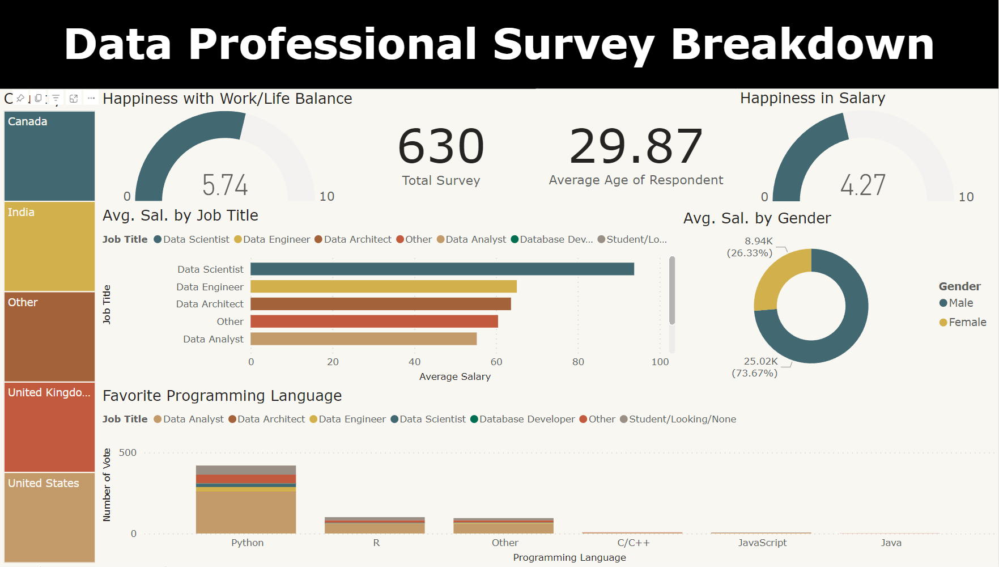

I designed a Power BI dashboard derived from a survey of data professionals, providing a comprehensive view of their job satisfaction, salary perceptions, work-life balance, preferred programming languages, and related insights. This interactive dashboard offers a visually intuitive representation of survey results, enabling us to gain valuable and actionable insights into the sentiments and preferences of data professionals within various aspects of their professional lives.

Currently, due to certain technical constraints, I am unable to directly embed or share the live dashboard on my website. However, I've made the dashboard files available for download on my GitHub repository for your convenience. You can access and download the accompanying files by visiting the following GitHub link: https://github.com/mtjbendong/Power-BI-Data-Professional-Survey-Breakdown.